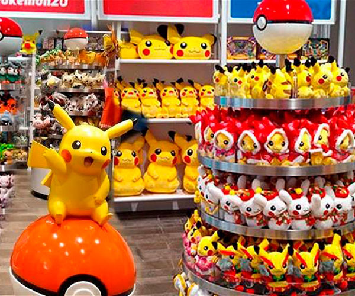
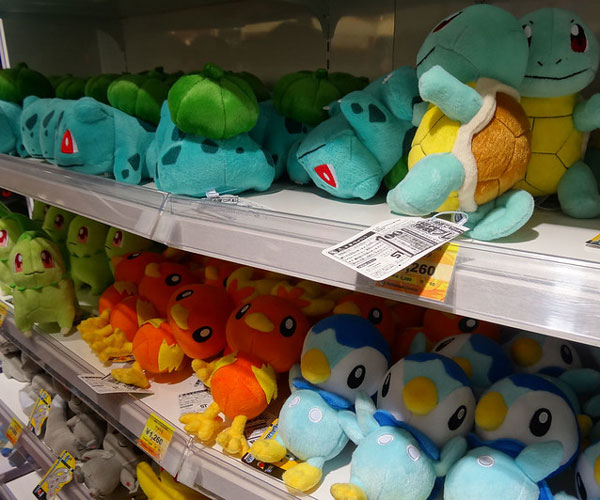

MERCANCÍA

The Pokémon Company sigue vendiendo más allá de Nintendo Switch y 3DS, los beneficios de la marca fueron de 11.600 millones de dólares; solamente en merchandising y productos bajo licencia.
El informe lo firma License Global y GamesIndustry.biz se hace eco de ello, porque la empresa de investigación de productos de consumo y licencias clasificó 84 marcas en ventas minoristas.
Y resulta que en todo el mundo durante 2022, The Pokémon Company se situó en el número 5 del Top 10; nada sorprendente si tenemos en cuenta que los juegos de la saga venden igual de bien.
Las ventas de la empresa japonesa generaron 11.600 millones de dólares en beneficios por licencias y merchandising durante 2022, lo que supone un aumento del 36,5% en comparación con los 8.500 millones de dólares obtenidos en 2021. Si tenemos en cuenta que han conseguido generar otros 3.100 millones de dólares adicionales, The Pokémon Company se asienta en el puesto número 2 en cuanto a crecimiento de marca.
Las ventas de la empresa japonesa generaron 11.600 millones de dólares en beneficios por licencias y merchandising durante 2022, lo que supone un aumento del 36,5% en comparación con los 8.500 millones de dólares obtenidos en 2021. Si tenemos en cuenta que han conseguido generar otros 3.100 millones de dólares adicionales, The Pokémon Company se asienta en el puesto número 2 en cuanto a crecimiento de marca.
El programa de productos bajo licencia que tiene The Pokémon Company incluye juegos, juguetes, ropa y accesorios, colaboraciones con diseñadores, decoración del hogar y publicaciones.
Ya hemos hablado de zapatillas, Pokémon GO Plus +, bandanas, peluches y muchas cosas más, Nintendo y Pokémon hace un dúo de ventas absolutamente impresionante.
La empresa también se asociaba con nuevas licencias el año pasado, obteniendo el premio Licencia del Año 2022 de la Asociación del Juguete.
Lo mejor y más impresionante de todo es que The Pokémon Company es la única compañía centrada en juegos en este Top 10, que lidera The Walt Disney Company con unos beneficios de 61.700 millones de dólares. Hace poco también supimos que The Pokémon Company conseguía otro año fiscal de récord en beneficios tras un 2022 exitoso en móviles y Nintendo Switch. Y en 2022, la compañía reportó un aumento del 70,4% en ventas durante su año fiscal 2021, impulsado por éxitos como New Pokémon Snap, Pokémon Diamante Brillante y Pera Reluciente y Leyendas Pokémon: Arceus.
Lo mejor y más impresionante de todo es que The Pokémon Company es la única compañía centrada en juegos en este Top 10, que lidera The Walt Disney Company con unos beneficios de 61.700 millones de dólares. Hace poco también supimos que The Pokémon Company conseguía otro año fiscal de récord en beneficios tras un 2022 exitoso en móviles y Nintendo Switch. Y en 2022, la compañía reportó un aumento del 70,4% en ventas durante su año fiscal 2021, impulsado por éxitos como New Pokémon Snap, Pokémon Diamante Brillante y Pera Reluciente y Leyendas Pokémon: Arceus.

Página web creada por: David Bolívar - 2024